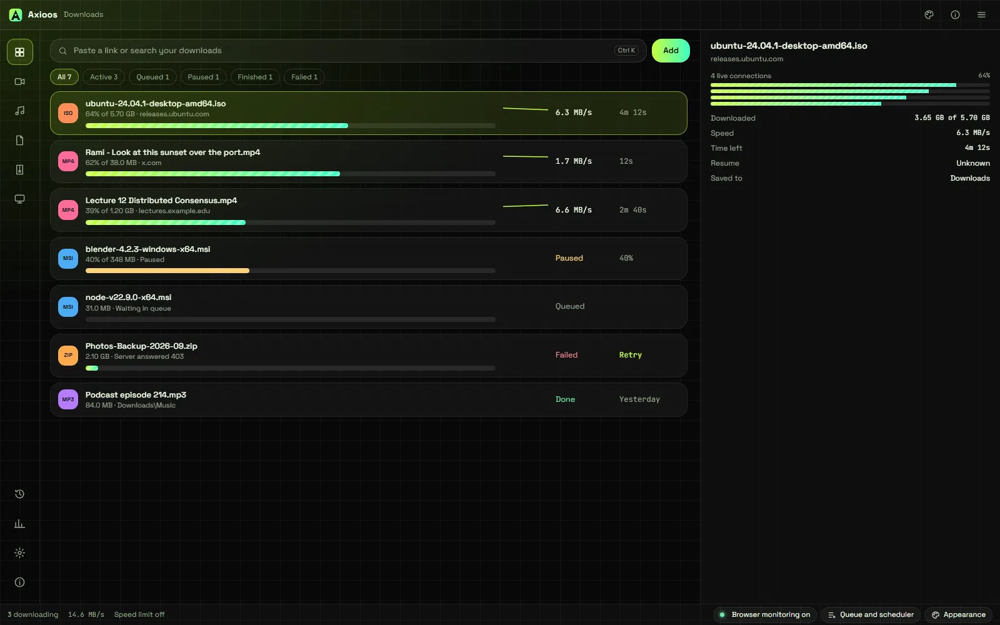
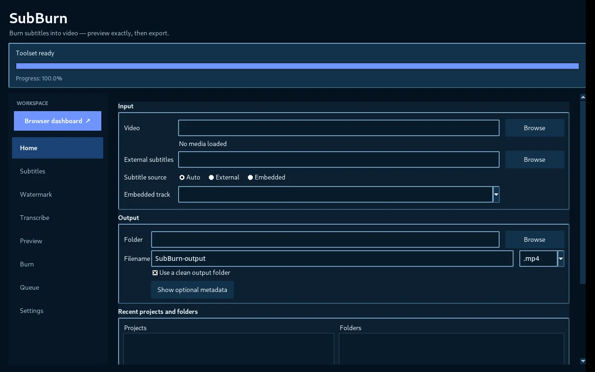
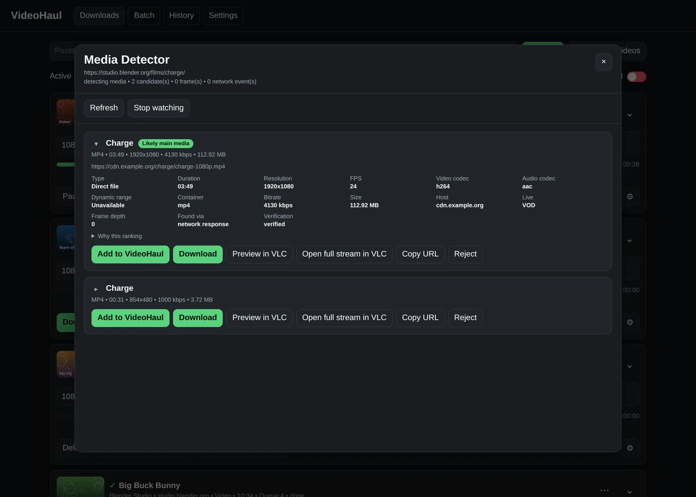

Desktop apps, media pipelines, backends and AI systems.تطبيقات سطح مكتب، ومعالجة فيديو، وخوادم، وأنظمة ذكاء اصطناعي.
Recent work: a C# download manager in public release, an AI retrieval system that cites every fact, and API-driven Android apps for a 2013 phone.من أحدث أعمالي: مدير تنزيلات بلغة C# أطلقته للعموم، ونظام ذكاء اصطناعي لا يقدّم معلومة دون مصدرها، وتطبيقات أندرويد مبنية على واجهات Google البرمجية لهاتف من عام 2013.
Axioos Download Manager · v1.0.4, releasedالإصدار 1.0.4 متاح الآن
1,500+automated tests on Axioosاختبار آلي في Axioos
10,200download failure scenarios simulatedسيناريو عطل في محاكاة التنزيل
265scholarship records audited at sourceمنحة مدقّقة من مصادرها الرسمية
302production failures traced to root causeعطل حقيقي تتبّعتُ سببه الجذري
Selected workأعمال مختارة
Problems solvedمشكلات حللتُها

01
Axioos Download Manager
v1.0.4 · open source
Problemالمشكلة
A large open-source C# download manager, no longer maintained, with deep reliability bugs.مدير تنزيلات مفتوح المصدر بلغة C#، ضخم الحجم، توقف تطويره وتراكمت فيه أعطال عميقة.
Fixedما أصلحته
A freeze on every FFmpeg merge (lock inversion). Resume merging two versions of a file. File names in every script decoding as garbage.تجمُّد التطبيق عند كل دمج بـ FFmpeg بسبب تعارض في الأقفال، واستكمالٌ كان يخلط نسختين مختلفتين من الملف، وأسماء ملفات تتحول إلى رموز غير مفهومة بأي لغة غير الإنجليزية.
Resultالنتيجة
Shipped as my own product: new UI, browser extension, installer. 1,500+ tests.أطلقته منتجًا مستقلًا بواجهة جديدة وإضافة للمتصفح ومثبّت خاص، ويغطيه أكثر من 1,500 اختبار.
Students need scholarship facts they can trust. AI assistants invent deadlines and amounts.يحتاج الطالب إلى معلومات منح يثق بها، بينما تخترع المساعدات الذكية مواعيد ومبالغ لا وجود لها.
Builtما بنيته
Arabic-first RAG: hybrid full-text and vector retrieval, and a LangGraph agent that can only answer from cited facts.نظام RAG يضع العربية أولًا، يجمع البحث النصي والبحث الدلالي، ويعمل فيه وكيل LangGraph لا يجيب إلا من معلومات موثّقة بمصادرها.
Resultالنتيجة
265 records audited against official sources. 184 tests passing. Works with JavaScript off.265 منحة دُقّقت في مصادرها الرسمية، و184 اختبارًا ناجحًا، ويعمل حتى مع تعطيل JavaScript.
A signed-in video app with subscriptions for a 2013 phone on Android 5, which current apps and most libraries no longer support.تطبيق فيديو بتسجيل دخول واشتراكات لهاتف من عام 2013 يعمل بأندرويد 5، وهو نظام تخلّت عنه التطبيقات الحديثة ومعظم المكتبات.
APIsالواجهات البرمجية
Google OAuth 2.0 (device-code flow and PKCE loopback) and the YouTube Data API, from an app registered and verified in Google Cloud. On the device: Media3, MediaCodec, MediaMuxer and MediaSession.تسجيل الدخول بحساب Google عبر OAuth 2.0، إما برمز يُدخَل من جهاز آخر أو على الهاتف نفسه عبر PKCE، مع YouTube Data API، من تطبيق مسجّل ومعتمد في Google Cloud. وعلى الجهاز: Media3 وMediaCodec وMediaMuxer وMediaSession.
Solvedما حللته
Google refused a scope for device sign-in, so features degrade cleanly instead of failing. Per-connection throttling beaten with 4 parallel 1 MB ranges (5 to 10 times faster). A build that fails on any API newer than 21.رفضت Google إحدى الصلاحيات عند الدخول برمز الجهاز، فصمّمتُ الميزات لتعمل ضمن المتاح بدل أن تتعطل. وتغلّبتُ على تقييد سرعة كل اتصال بتنزيل أربعة أجزاء في وقت واحد، فصار التنزيل أسرع من 5 إلى 10 مرات. وأي استدعاء لواجهة أحدث من الإصدار 21 يوقف البناء فورًا.
KotlinGoogle OAuth 2.0YouTube Data APIMedia3Android API 21

04
SubBurn
open source
Problemالمشكلة
Burned-in subtitles break on Arabic, Hebrew and CJK text, and on encoders that don't work on the machine.الترجمة المحروقة على الفيديو تنكسر مع العربية والعبرية والصينية، ومع ترميزات لا يدعمها الجهاز أصلًا.
Fixedما أصلحته
A "GPU disabled" error that was really an FFmpeg/NVENC version mismatch. Now detected from the actual build.ظهر خطأ يوحي بأن كرت الشاشة معطّل، والسبب الحقيقي عدم توافق بين FFmpeg وNVENC. صار التطبيق يكتشف ذلك من النسخة المثبتة فعلًا.
Resultالنتيجة
Correct text in every script, exact previews, a queue that survives restarts.نص سليم بأي لغة، ومعاينة مطابقة للنتيجة، وطابور مهام لا يضيع بعد إعادة التشغيل.
موجزك الصباحي• تقنية: إطلاق نموذج ذكاء اصطناعي جديد 3 sources• رياضة: نتيجة مباراة الليلة 2 sources• محلي: تحديث حالة الطرق updated07:00
05
Anas's Briefing Roomغرفة أنس الإخبارية
live bot
Problemالمشكلة
Personalized news from hundreds of sources, in several languages, on hard serverless quotas.أخبار مخصّصة لكل مستخدم من مئات المصادر وبعدة لغات، ضمن حدود استخدام صارمة على منصة سحابية.
Fixedما أصلحته
Duplicate Telegram sends after a failed commit. A migration retrying 100+ times and burning quota.رسائل تيليجرام كانت تُرسل مرتين بعد فشل الحفظ، وترحيلٌ لقاعدة البيانات أعاد المحاولة أكثر من 100 مرة حتى استنزف الحصة.
Resultالنتيجة
302 production failures traced to root cause, each with a prevention rule.302 عطل حقيقي تتبّعتُ كلًّا منها حتى سببه الجذري، ولكل واحد قاعدة تمنع تكراره.
Media that appears only after you interact with the page, and downloads that report success too early.فيديوهات لا تظهر إلا بعد التفاعل مع الصفحة، وتنزيلات تُعلن اكتمالها قبل أن تكتمل فعلًا.
Builtما بنيته
A Playwright media detector that lists only verified streams, with HLS/DASH, pause, resume and crash recovery.كاشف وسائط مبني على Playwright لا يعرض إلا المصادر التي تحقّق منها، مع دعم HLS/DASH والإيقاف والاستكمال والتعافي من الأعطال.
Resultالنتيجة
A job counts as finished only after the output is validated.لا يُعدّ أي تنزيل مكتملًا قبل فحص الملف الناتج.
Battery settings on Windows are scattered, and most optimizers change things nobody can undo.إعدادات البطارية في ويندوز مبعثرة في أماكن كثيرة، ومعظم أدوات التحسين تغيّر أشياء لا يمكن التراجع عنها.
Builtما بنيته
Detects the laptop and battery, applies a plan for how you use it, and backs up every setting before any change. Never touches drivers, network, BIOS or firmware.يتعرّف على الجهاز والبطارية، ويطبّق خطة تناسب طريقة استخدامك، ويحفظ نسخة من كل إعداد قبل أي تغيير، ولا يقترب من التعريفات أو الشبكة أو BIOS.
Fixedما أصلحته
A revert that went back to the wrong state when its state file was lost. It now rebuilds the original settings from every backup that survives.استرجاعٌ كان يعيد الجهاز إلى حالة خاطئة إذا ضاع ملف الحالة، وصار يعيد بناء الإعدادات الأصلية من كل نسخة احتياطية متبقية.
Xtreme Download Manager 8.0.29 is a mature open-source C# download manager (GPL-2.0, by Subhra Das Gupta) that is no longer actively developed. I rebuilt it as my own product. The code wasn't mine to start with, which is exactly what most rescue work looks like.Xtreme Download Manager 8.0.29 مدير تنزيلات مفتوح المصدر مكتوب بلغة C#، طوّره Subhra Das Gupta ونشره برخصة GPL-2.0، ثم توقف تطويره. أخذتُه وأعدتُ بناءه منتجًا خاصًا بي. لم أكتب شيفرته الأصلية، وهذا تحديدًا ما تبدو عليه أغلب مشاريع الإنقاذ.
What I builtما بنيته
A WebView2 main window with 12 colour themes and 4 presets, while the dialogs stay native WPF.نافذة رئيسية مبنية بـ WebView2 فيها 12 سمة لونية و4 أنماط جاهزة، مع إبقاء النوافذ الفرعية على WPF.
A Chromium extension and a takeover protocol with an ownership state machine, so the browser and the app never both download the same file.إضافة لمتصفحات Chromium مع بروتوكول يحدد من يملك كل تنزيل، فلا يحمّل المتصفح والتطبيق الملف نفسه معًا.
A branded installer that backs up the download list, removes the old version as one protected step and restores it if anything fails.مثبّت خاص يحفظ نسخة من قائمة التنزيلات، ويزيل الإصدار القديم في خطوة واحدة آمنة، ويستعيده إن فشل التثبيت.
Hard problems solvedأصعب ما حللته
File names in any script came out as garbage: .NET Framework reads header bytes one character at a time. 1.0.4 decodes Arabic, Hebrew, Persian, Chinese, Japanese, Russian and Hindi names correctly, keeps the extension at the end of right-to-left names and strips hidden characters that can disguise a file type.أسماء الملفات بغير الإنجليزية كانت تتحول إلى رموز غير مفهومة، لأن .NET Framework يقرأ ترويسة الاستجابة بايتًا بايتًا. صار الإصدار 1.0.4 يقرأ الأسماء العربية والعبرية والفارسية والصينية واليابانية والروسية والهندية كما هي، ويُبقي الامتداد في آخر الاسم المكتوب من اليمين، ويحذف الرموز الخفية التي قد تُستخدم لإخفاء نوع الملف الحقيقي.
Resume merged two versions of a file when the server's copy changed. It now checks the file is unchanged and warns instead of corrupting it.الاستكمال كان يخلط نسختين من الملف إذا تغيّرت نسخته على الخادم. الآن يتأكد أولًا أن الملف لم يتغير، وينبّهك بدل أن يُتلفه.
A freeze during FFmpeg merges from lock inversion, a delete that wiped the whole list on restart, and a speed limiter that never actually waited.تجمّد أثناء الدمج بـ FFmpeg سببه تعارض في الأقفال، وحذفٌ كان يمسح القائمة كاملة عند إعادة التشغيل، ومحدِّد سرعة لم يكن يحدّ من شيء في الواقع.
A Galaxy Note 3 on Android 5 (API 21). Current apps no longer install, many AndroidX and Media3 releases require API 23, the hardware decodes only H.264, and the built-in MP4 tools are older than on newer phones.هاتف Galaxy Note 3 بأندرويد 5 (الواجهة 21): التطبيقات الحديثة لم تعد تُثبَّت عليه، وكثير من إصدارات AndroidX وMedia3 تشترط الواجهة 23، وعتاده لا يشغّل إلا H.264، وأدوات MP4 فيه أقدم بكثير من الهواتف الحالية.
API integrationالعمل مع الواجهات البرمجية
Google OAuth 2.0, two ways: a device-code flow (approve on another device, no browser needed on the phone) and an on-phone flow through the system browser with PKCE and a one-shot loopback listener, because Google blocks sign-in inside embedded WebViews.تسجيل الدخول بحساب Google بطريقتين: برمز يُوافَق عليه من جهاز آخر دون الحاجة إلى متصفح على الهاتف، أو على الهاتف نفسه عبر متصفح النظام مع PKCE ومستمع محلي يعمل مرة واحدة، لأن Google تمنع تسجيل الدخول من داخل نوافذ الويب المضمّنة.
Working within the API's limits: Google refused the scope that comments need for device-code sign-in, so the app was designed around what each sign-in method can actually do.التصميم ضمن حدود الواجهة: رفضت Google الصلاحية اللازمة للتعليقات عند الدخول برمز الجهاز، فبنيتُ التطبيق حول ما تسمح به كل طريقة دخول فعلًا.
Registered and published in Google Cloud: consent screen, a GitHub Pages homepage and privacy policy for verification, and client secrets kept out of the repo and checked against Google's token endpoint before each build.تسجيل التطبيق واعتماده في Google Cloud: شاشة الموافقة، وصفحة رئيسية وسياسة خصوصية على GitHub Pages، وأسرار العميل محفوظة خارج المستودع ويُتحقق منها لدى Google قبل كل بناء.
One gateway for all video data, isolated in a single module so a change upstream touches one file.نقطة واحدة لكل بيانات الفيديو معزولة في وحدة مستقلة، فأي تغيير من المصدر لا يمس إلا ملفًا واحدًا.
Unusual solutionsحلول غير مألوفة
Throttled downloads: each connection was capped at about 50 to 70 KB/s. Four 1 MB ranges fetched in parallel and appended in order made it roughly 5 to 10 times faster, and the file stays playable while it downloads.تنزيلات مقيّدة السرعة: كان كل اتصال محدودًا بنحو 50 إلى 70 كيلوبايت في الثانية. بتنزيل أربعة أجزاء من 1 ميجابايت في وقت واحد وضمّها بالترتيب، صار التنزيل أسرع من 5 إلى 10 مرات، ويمكن تشغيل الملف قبل أن يكتمل.
Decoder-aware quality: qualities are listed from what the phone's codecs report they can decode, so nothing stutters or fails silently.جودة على قدر الجهاز: لا تظهر إلا الجودات التي تقول ترميزات الهاتف إنها قادرة على تشغيلها، فلا تقطيع ولا فشل صامت.
No silent crashes on old Android: lint makes any call newer than API 21 a build error. It caught crashes that only happened on the Android 5 phone.لا مفاجآت على الأنظمة القديمة: أي استدعاء لواجهة أحدث من الإصدار 21 يوقف البناء، وقد كشف ذلك أعطالًا لم تكن تظهر إلا على هاتف أندرويد 5.
A floating player that drags smoothly on Android 5, using TextureView, because SurfaceView lags behind view movement before Android 7.مشغل عائم يتحرك بسلاسة على أندرويد 5 بفضل TextureView، لأن SurfaceView يتأخر عن حركة الشاشة في الإصدارات التي تسبق أندرويد 7.
A local recommender built from likes, watches and searches, where "Not interested" actually changes future results.توصيات محلية تُبنى من الإعجابات والمشاهدات وعمليات البحث، وزر "غير مهتم" فيها يغيّر ما يظهر لاحقًا فعلًا.
Testedالاختبار
On real phones, not only in the build: downloads of 10- and 37-minute videos completed with exact sizes, the queue survives pauses, deletes and stalls, and blocks persist across restarts.جرّبته على هواتف حقيقية لا عند البناء فقط: اكتمل تنزيل فيديوهات مدتها 10 دقائق و37 دقيقة بأحجامها الصحيحة، وصمد طابور التنزيل أمام الإيقاف والحذف والتوقف المفاجئ، وبقي الحظر محفوظًا بعد إعادة التشغيل.
Personal app, not distributed.تطبيق للاستخدام الشخصي، غير منشور.
The problemالمشكلة
Battery life on Windows depends on power plans, GPU routing, background services and browser behaviour, spread across many settings. Most "battery saver" tools either do too little or change things you can't get back.عمر البطارية في ويندوز تتحكم فيه خطط الطاقة وتوزيع العمل على كرت الشاشة والخدمات الخلفية وسلوك المتصفح، وكلها موزعة على إعدادات كثيرة. ومعظم أدوات توفير البطارية إما لا تفعل شيئًا يُذكر، أو تغيّر ما لا يمكنك استرجاعه.
Originالبداية
It started as a tool for one laptop, an MSI Crosshair 17 with Intel graphics and an RTX 3050 Ti, and went through 11 release candidates. Endura turns it into an app that works on any Windows laptop.بدأ أداةً لجهاز واحد، MSI Crosshair 17 بكرت Intel وكرت RTX 3050 Ti، ومرّ بإحدى عشرة نسخة تجريبية. ثم تحوّل إلى Endura: تطبيق يعمل على أي حاسوب محمول بنظام ويندوز.
Rules built into the codeقواعد مكتوبة في الشيفرة
Back up first, always. Every change is preceded by a backup of the current settings, and the interface has a dedicated section for going back.النسخ الاحتياطي أولًا، دائمًا. لا يحدث أي تغيير قبل حفظ الإعدادات الحالية، وفي الواجهة قسم مخصّص للعودة إليها.
Hands off what can break a machine: no changes to drivers, network adapters, DNS, firewall, BIOS, firmware or fan curves. Saving comes from routing ordinary apps to the integrated GPU, not from disabling hardware.لا مساس بما قد يعطّل الجهاز: لا تعديل على التعريفات أو الشبكة أو DNS أو الجدار الناري أو BIOS أو المراوح. التوفير يأتي من توجيه التطبيقات العادية إلى كرت الشاشة المدمج، لا من تعطيل العتاد.
Fail safe: if it can't prove running developer tools and Python processes are protected, it stops instead of closing apps.التوقف عند الشك: إذا لم يستطع التأكد من حماية أدوات المطوّر وعمليات بايثون الجارية، يتوقف بدل أن يغلق التطبيقات.
Hard problems solvedأصعب ما حللته
A revert that chose the wrong starting point when its state file was missing or a bad revert had already run. It now searches every surviving backup and restores the oldest reliable state.استرجاعٌ كان يختار نقطة بداية خاطئة إذا فُقد ملف الحالة أو سبقه استرجاع فاشل. صار يبحث في كل نسخة احتياطية متبقية ويعيد أقدم حالة موثوقة.
Battery numbers that lied: measurements taken while apps were restarting. Now it waits for the system to settle and takes the median of several windows. Windows can't measure per-app battery use, so Endura doesn't pretend to.أرقام بطارية مضلِّلة: كانت القياسات تؤخذ والتطبيقات تعيد تشغيل نفسها. صار ينتظر حتى يستقر النظام ثم يأخذ الوسيط من عدة قياسات. وويندوز لا يستطيع قياس استهلاك كل تطبيق على حدة، لذلك لا يدّعي Endura ذلك.
Verificationالتحقق
96 structural safety tests on the core, plus UI Automation tests on the installed app: first-run wizard, every page, apply, undo, upgrade and uninstall with full cleanup.96 اختبار أمان على النواة، إضافة إلى اختبارات أتمتة واجهة على التطبيق بعد تثبيته: معالج التشغيل الأول، وكل الصفحات، والتطبيق، والتراجع، والترقية، وإزالة التثبيت مع تنظيف كامل.
Burning subtitles at scale needs text that renders correctly in every script, the fastest encoder that actually works on the machine, and output you can trust without watching every file.حرق الترجمة على مئات الفيديوهات يتطلب نصًا سليمًا بكل اللغات، وأسرع ترميز يعمل فعلًا على الجهاز، وملفات ناتجة يمكن الوثوق بها دون مشاهدتها واحدًا واحدًا.
What it doesما يقدّمه
External, embedded or locally transcribed subtitles, with styling, positioning and RTL handling.ترجمات خارجية أو مدمجة أو مولّدة محليًا من الصوت، مع التنسيق وتحديد الموضع ومعالجة النصوص المكتوبة من اليمين.
Font fallback and glyph checks, so Arabic, Hebrew and CJK never come out as empty boxes.بدائل تلقائية للخطوط وفحص للحروف، فلا تظهر العربية أو العبرية أو الصينية مربعات فارغة.
Exact frame and short-clip previews before encoding, text and image watermarks.معاينة دقيقة لإطار واحد أو مقطع قصير قبل الترميز، وعلامات مائية نصية أو مصوّرة.
Hardware and software encoder detection, and a persistent queue that survives restarts.كشف تلقائي لترميزات كرت الشاشة والمعالج، وطابور مهام يبقى بعد إعادة التشغيل.
A desktop window and a local browser dashboard that control the same running session.نافذة على سطح المكتب ولوحة تحكم في المتصفح تديران الجلسة نفسها.
Hard problem solvedأصعب ما حللته
A GPU encoding failure that looked like a disabled graphics card was really an FFmpeg/NVENC API version mismatch. The fix was to detect what the installed FFmpeg build actually supports, not to guess, and to show the real FFmpeg error instead of "no encoder initialized".فشلٌ في الترميز عبر كرت الشاشة بدا كأن الكرت معطّل، بينما السبب الحقيقي عدم توافق إصدار FFmpeg مع NVENC. الحل أن يكتشف التطبيق ما تدعمه نسخة FFmpeg المثبتة فعلًا بدل التخمين، وأن يعرض الخطأ الحقيقي بدل رسالة عامة.
Students from Gaza looking for scholarships in Saudi Arabia, Qatar, the UAE, Oman, Kuwait and Bahrain face scattered official pages, conflicting deadlines and eligibility rules written for other students. A chatbot that invents a deadline or an amount does real harm here.الطالب في غزة حين يبحث عن منحة في السعودية أو قطر أو الإمارات أو عُمان أو الكويت أو البحرين يتنقّل بين صفحات رسمية متفرقة ومواعيد متضاربة وشروط وُضعت لطلاب غيره. وأي مساعد يخترع موعدًا أو مبلغًا هنا يضرّه فعلًا.
Principles built into the codeمبادئ مكتوبة في الشيفرة نفسها
Every critical fact shows its source, when it was checked and whether two independent sources agree.كل معلومة مهمة تعرض مصدرها وتاريخ التحقق منها، وهل يؤكدها مصدران مستقلان.
No admission probability. Academic, funding, documents, application route and visa are assessed separately, each as met, not met or unknown.لا "نسبة قبول" في أي مكان. الشروط الأكاديمية والتمويل والوثائق ومسار التقديم والتأشيرة تُقيَّم كلٌّ على حدة: مستوفى، أو غير مستوفى، أو غير معروف بعد.
"Fully funded" means comprehensive funding. Full tuition alone is labelled as full tuition."ممولة بالكامل" تعني تمويلًا شاملًا، أما الإعفاء من الرسوم وحده فيُذكر باسمه.
Works on slow connections with JavaScript turned off.يعمل على الاتصالات البطيئة، وحتى مع تعطيل JavaScript.
How it worksكيف يعمل
FastAPI modular monolith: server-rendered Arabic pages and a JSON API sharing the same use cases.تطبيق FastAPI مقسّم إلى وحدات داخل نظام واحد، تشترك فيه الصفحات العربية المولّدة على الخادم وواجهة JSON في المنطق نفسه.
PostgreSQL with pgvector. Hybrid retrieval: full-text search plus multilingual E5 vector search, fused with Reciprocal Rank Fusion.PostgreSQL مع pgvector، وبحث هجين يجمع البحث النصي الكامل والبحث الدلالي بنموذج E5 متعدد اللغات، ثم يدمج النتائج بخوارزمية Reciprocal Rank Fusion.
A bounded LangGraph assistant: it turns a question into structured constraints, answers from cited fact cards, asks at most two clarifying questions and resumes after a restart. It is never allowed to write a deadline, amount, outcome or link itself.مساعد LangGraph بصلاحيات محدودة: يحوّل السؤال إلى شروط واضحة، ويجيب من بطاقات معلومات موثّقة، ولا يسأل أكثر من سؤالين توضيحيين، ويكمل من حيث توقف بعد إعادة التشغيل. ولا يُسمح له إطلاقًا بأن يكتب من عنده موعدًا أو مبلغًا أو نتيجة أو رابطًا.
A Windows setup that inventories the machine first, reuses existing Python, browser and model caches, shows the exact download size and asks before downloading.إعداد على ويندوز يفحص الجهاز أولًا، ويستفيد مما هو مثبّت من بايثون والمتصفح والنماذج، ويعرض حجم التنزيل بدقة ويستأذنك قبل البدء.
Data and verificationالبيانات والتحقق
265scholarship recordsسجل منحة
157institutionsمؤسسة
560practical-evidence rowsسجل من الأدلة العملية
184tests passing, 0 failingاختبارًا ناجحًا دون أي فشل
Every record was audited against its official source, and 55 corrections were kept. Tests cover fake citations, prompt injection inside retrieved pages, SSRF, CSRF, session isolation, crash recovery and the no-JavaScript journey.دُقّق كل سجل في مصدره الرسمي واعتُمد 55 تصحيحًا. وتشمل الاختبارات الاستشهادات المزيفة، والتعليمات المدسوسة في الصفحات المسترجعة، وثغرات SSRF وCSRF، وعزل الجلسات، والتعافي من الأعطال، والتصفح دون JavaScript.
Status: in Windows acceptance testing before the code goes public. Generative AI is off by default, so answers come back as verified fact cards.الحالة: في مرحلة اختبار القبول على ويندوز قبل نشر الشيفرة. التوليد بالذكاء الاصطناعي معطّل افتراضيًا، فتصل الإجابات على شكل بطاقات معلومات موثّقة.
A personal news and alerts service that collects from hundreds of sources, classifies, ranks, removes duplicates and translates, then delivers to Telegram users who each want different languages and topics.خدمة أخبار وتنبيهات مخصّصة تجمع من مئات المصادر، فتصنّف الأخبار وترتّبها وتحذف المكرر وتترجم، ثم توصلها عبر تيليجرام لكل مستخدم بلغاته واهتماماته.
Constraintsالقيود
Cloudflare Workers, D1 and Queues, with hard platform quotas shared by every feature.Cloudflare Workers وD1 وQueues، بحصص استخدام صارمة تتقاسمها كل الميزات.
One user's language order must never leak into anyone else's.تفضيلات اللغة لدى مستخدم لا يجوز أن تؤثر في غيره.
A Telegram message must never be sent twice because of a retry.لا يجوز أن تُرسل رسالة مرتين بسبب إعادة المحاولة.
A database error must never look like "no news".خطأ في قاعدة البيانات لا يجوز أن يظهر وكأنه "لا أخبار جديدة".
Hard problems solvedأصعب ما حللته
A failing migration replayed more than 100 times and burned database quota. Fixed with bounded retries and a circuit breaker.ترحيلٌ فاشل لقاعدة البيانات تكرر أكثر من 100 مرة واستنزف الحصة، فحددتُ عدد المحاولات وأضفت قاطعًا يوقفه.
The send succeeded, the database commit failed, and the retry sent the message again. Fixed with durable send intents.نجح الإرسال وفشل الحفظ، فأعادت المحاولة إرسال الرسالة نفسها. الحل تسجيل نية الإرسال بشكل دائم قبل تنفيذه.
Duplicate removal that keeps genuine updates to the same story instead of hiding them.حذف الأخبار المكررة مع إبقاء التحديثات الجديدة للخبر نفسه.
How failures are handledكيف أتعامل مع الأعطال
302failures logged with root causeعطل موثّق بسببه الجذري
Open it, pick your languages and topics, and adjust anything you want.افتحه، واختر لغاتك واهتماماتك، وعدّل ما تشاء.

What it doesما يقدّمه
Paste a URL, analyze, choose quality and stream, download. Real byte counts, speed, ETA and stage on every job.الصق الرابط، حلّله، اختر الجودة، ثم نزّل. لكل مهمة عدد بايتات حقيقي وسرعة ووقت متبقٍّ ومرحلتها الحالية.
Media Detector: for pages that reveal media only after you press Play, it watches a real Playwright browser session and lists only media it can verify.كاشف الوسائط: في الصفحات التي لا يظهر فيها الفيديو إلا بعد الضغط على تشغيل، يراقب جلسة متصفح حقيقية ولا يعرض إلا ما تحقّق منه.
Playlists and batches, concurrency, pause, resume, retry, duplicate detection and recovery after an interruption.قوائم تشغيل ودفعات، وتنزيل متوازٍ، وإيقاف واستكمال وإعادة محاولة، وكشف للتكرار، وتعافٍ بعد الانقطاع.
A desktop app and a local browser dashboard on the same engine, protected by a per-launch access key.تطبيق سطح مكتب ولوحة تحكم محلية في المتصفح يعملان على المحرك نفسه، ويحميهما مفتاح وصول جديد مع كل تشغيل.
Design ruleقاعدة في التصميم
A transfer is never called complete until the output has been finalized and validated. No DRM bypass, no telemetry, no account.لا يُعدّ أي تنزيل مكتملًا قبل إغلاق الملف الناتج وفحصه. لا تجاوز لحماية المحتوى، ولا تتبّع، ولا حسابات.